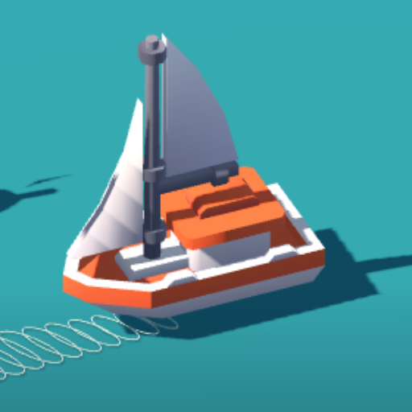

Tack & Tide
Read the wind, trim the sail, tack to the buoy. 24 regattas against your own ghost.
Tack & Tide is a compact 3D sailing game about choosing a course, setting your sail and beating your own time. Hold Port or Starboard to turn, or drag across the water to steer. Ease or tighten the sail until its white marker sits in the green trim band. The wind arrow points to where the wind is coming from, and the sail-power display shows how well you are using it. If you head straight into the wind, turn diagonally and tack back toward your buoy. Each of the 24 regattas has six numbered buoy rings to pass in order, across Coral Marina, Blue Harbor, Emerald Coast and Twilight Inlets, with five wind patterns from a steady breeze to shifting coastal winds. A fixed course map shows your position and the next buoy, and each attempt has four minutes. Faster finishes earn medals and unlock the next regatta, and your fastest clean route becomes a ghost to race. Tokens buy boat color tints. Offline, no account. Free with ads.